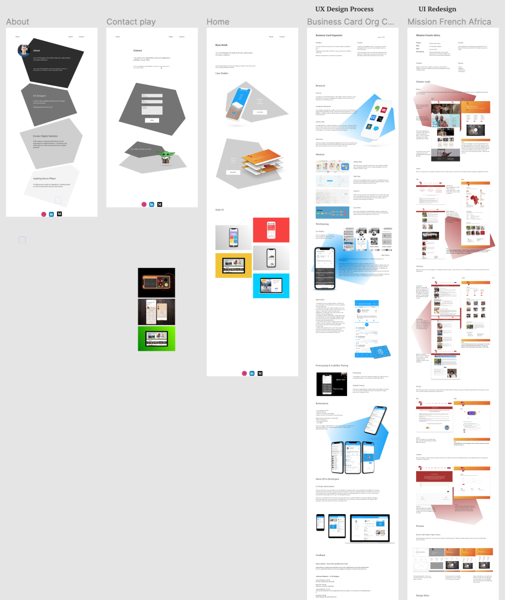
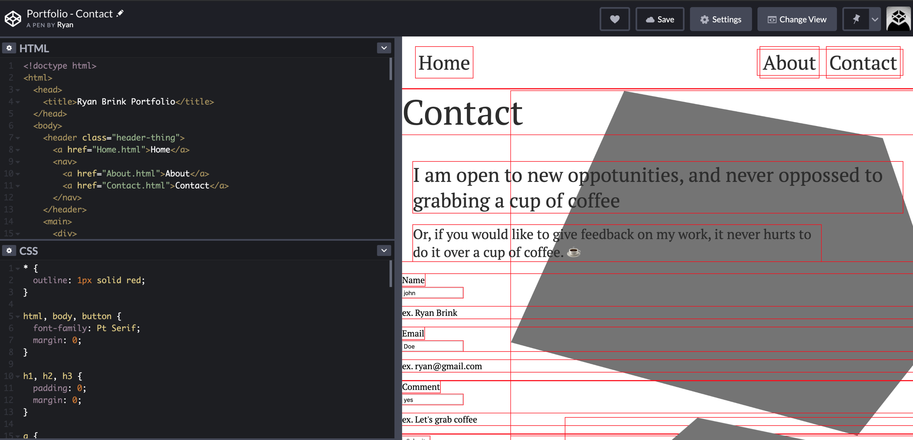
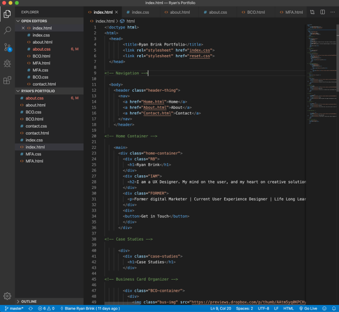
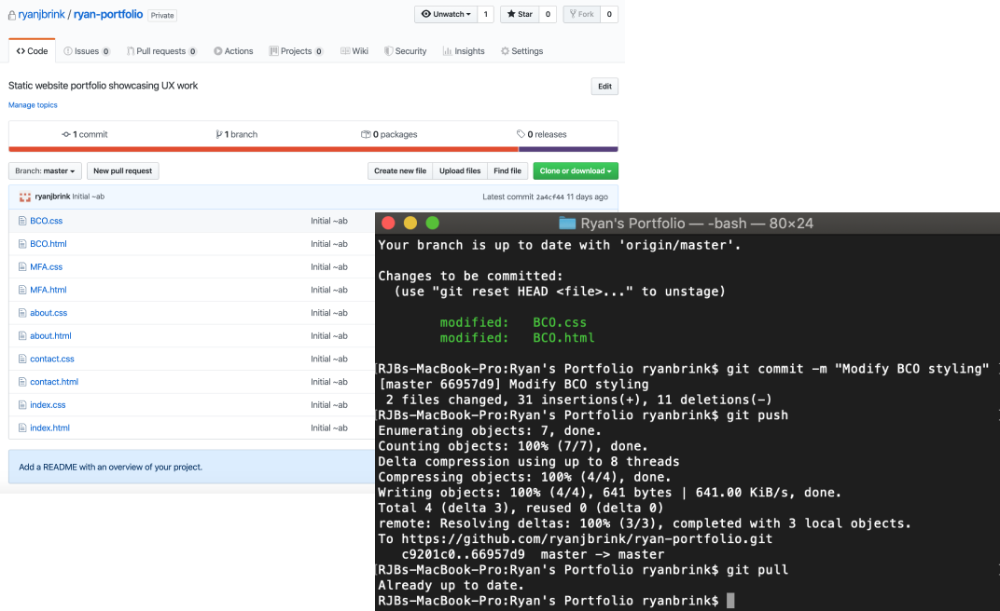

Coding My Portfolio
Febuary 2020 - April 2020Problem
Typical portfolios follow a stock build from a typical web builder. I did not want that, and I sought to improve my coding abilities.
Context
I need to understand the building blocks behind my designs. Practicing coding will help my designs become more friendly to developers.
Objective
To finish Coding the website in order to share my experience with employers.
Planning
I used Figma to iterate several ideas for my portfolio. My first iteration was a not thought out, not considering the coding task in hand. I created wire frames that consisted of a complex layout. Including pictures on top of pictures.
Coding
Code Pen was useful in seeing iterations instantly to have a shorter feedback loop. As per my design, it was difficult to align all the items properly.Back to the drawing board. I discarded the shapes and sought a simpler layout. I also kept in mind the need for responsive design.
I created mobile wire frames for the portfolio. I intentionally created them in the easiest manner possible for the media queries I would have to code.

Problems
The best way to describe my first attempt at coding the website is “hacky”. Items were willed into place using “relative” and “absolute” values in CSS. Although this worked, it did not have responsive capabilities.The second time around was better. I got rid of the clutter, and became more consistent in how I aligned items. I used FlexBox and proper margins to keep everything in the right place. I still had three problems.
What is the proper way to use margins? For example, do I give the margin to the top piece of content, the bottom, or split on both? Needless to say, without planning ahead, I have instances of each.

The second problem is with responsive design. Instead of hard pixels, I used vh or vw for pictures. At certain
screen sizes it looks good, but it gets bad quickly as soon as you decrease the size. I also did not want to
implement several media queries to resize the content at each problem point.
The third problem, comes from the lack of standardized labeling for CSS. For example, I would give the research title a class of “research title”, and style it in CSS. However, coming into the Ideation section, I realized that the same “research title” class would work in styling the rest of the titles. Fortunately the only other person who worked on this project was my brother, and not a team of developers.
Lastly, I only know HTML and CSS (front end). In order to get a working website I will have to either learn a lot more, or ask for help.
The third problem, comes from the lack of standardized labeling for CSS. For example, I would give the research title a class of “research title”, and style it in CSS. However, coming into the Ideation section, I realized that the same “research title” class would work in styling the rest of the titles. Fortunately the only other person who worked on this project was my brother, and not a team of developers.
Lastly, I only know HTML and CSS (front end). In order to get a working website I will have to either learn a lot more, or ask for help.
Solution
Each iteration came with solutions from my brother. Showing me how to better implement each design. Furthermore, upon calculated the time it took to get two iterations done, I decided to give him more responsibility in coding the site. Using VS Code and GitHub, I committed the code so that my brother could work on the site.